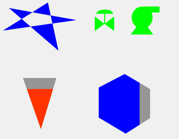

Polygon

A polygon graphics shape.
Operations
Whild creating widget, each click will add a new point, double click to finish creating.
After created, you are still able to move its points by dragging the yellow square handlers
while it is selected.
You can flip or rotate it from Orientation context menu.
Special Properties
- Rotation Angle (rotation_angle). Rotate its points by this angle in degree.
- Points (points). Points of the polygon.
See Also